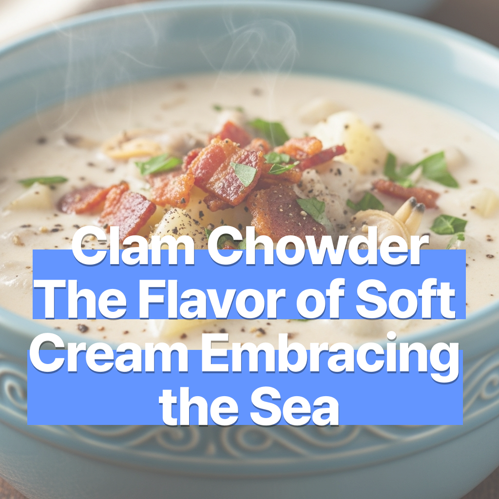

클램차우더 – 해산물을 감싼 부드러운 크림의 맛
2025-07-16

클램차우더 – 해산물을 감싼 부드러운 크림의 맛
부드러운 크림이 감싼 진한 바다의 맛. 감자, 베이컨, 조개, 그리고 풍미 가득한 크림 소스. 향과 맛의 조화가 아름다운 요리. 클램 차우더. 오늘은 여러분께 크림파도의 맛을 소개합니다.
🛒 재료 (2~3인분)
- 조개살 150g (통조림 또는 생물)
- 감자 1개
- 양파 ½개
- 베이컨 2줄
- 우유 1컵
- 생크림 ½컵
- 밀가루 1큰술
- 버터 1큰술
- 물 또는 육수 1컵
- 소금, 후추
- (선택) 셀러리, 타임, 파슬리
🔪 재료 손질
감자는 껍질을 벗겨 1.5cm 크기로 깍둑 썰기
양파는 곱게 다지고, 셀러리는 송송 썰기
베이컨은 작게 큐브 형태로 썰기
조개는 통조림일 경우 액체는 따로 보관하고, 생물일 경우 해감 후 껍질 제거해 사용
⚠️ 해산물 조리 시 주의사항
생조개는 반드시 깨끗한 소금물에 해감하고, 데친 뒤 껍질을 제거해 사용하세요.
조개살은 오래 끓이면 질겨질 수 있으니 마지막 단계에 넣는 것이 좋습니다.
민감한 경우 통조림 조개를 활용하면 보다 안전하게 조리할 수 있어요.
🍳 만드는 법
- 냄비에 버터를 녹이고 베이컨을 노릇하게 볶습니다.
- 양파, 감자, 셀러리를 넣고 2~3분간 볶습니다.
- 밀가루를 넣어 섞고, 물 또는 육수를 천천히 부으며 뭉치지 않게 저어줍니다.
- 감자가 익을 때까지 약 10분 끓인 후 조개살, 우유, 생크림을 넣습니다.
- 중약불에서 5~7분 더 끓이며 소금·후추·허브로 간을 맞춥니다.
- 원하는 농도에 따라 우유 또는 육수를 조금 더 추가해 조절하세요.
- 그릇에 담고 파슬리를 살짝 뿌리면 완성!
💡 팁
- 통조림 조개의 액체를 약간 넣으면 바다향이 깊어집니다.
- 넛맥을 아주 소량 넣으면 은은한 고급스러운 향을 더할 수 있어요.
- 바게트나 사워도우와 함께 곁들이면 더 풍성한 식사가 됩니다.
- 감자를 너무 작게 썰면 흐물거릴 수 있으니 큼직하게 썰어 식감을 살려주세요.
부드러운 크림이 품은 바다의 향, 오늘은 클램차우더로 그 깊이를 느껴보세요.